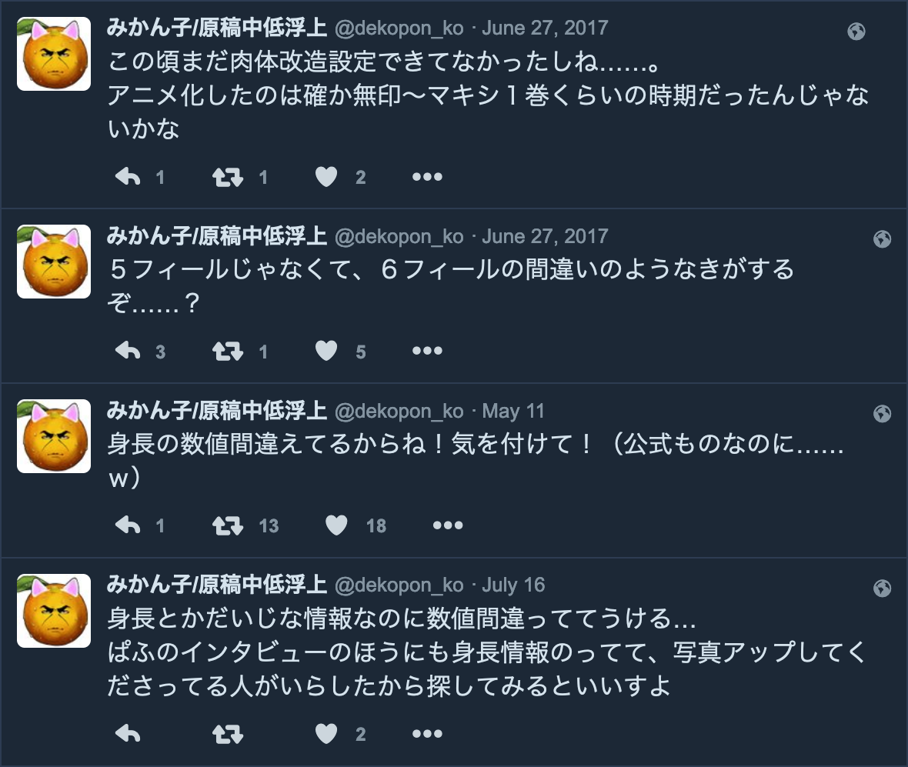

- Source Text
- The inside of the Trigun anime ('98) DVD sleeve
- Links
- Photos by @dekopon_ko (Twitter) / Tumblr post
Hover over underlined text to see my comments.
ＴＲＩＧＵＮ再上映が嬉しくて、なつかしさについＴＶ版ＤＶＤを掘り返していたら、ＤＶＤの帯の裏にさらっと大事すぎることが色々書いてあったのでご参考にどうぞ！
— みかん子/原稿中低浮上 (@dekopon_ko) June 27, 2017
ただし、あくまで放映当時のアニメ版としての資料だと思います～（牧師の年齢とか） pic.twitter.com/OqpBpxn9u7
I was so happy about the Trigun re-screening that I dug back out the TV version's DVD out of nostalgia... I found lots of important information on there, so feel free to use this as a reference!
However, I think this is just information for the anime version at the time. (like Wolfwood's age)

- [2017/06/27] Back then, his physical enhancements didn't exist yet....
I think the anime adaption was around the time of Trigun (original) – Maximum Vol.1?- [2017/06/27] I have a feeling it's supposed to be 6-feel instead of 5...?
- [2023/05/11] The height measurements are wrong! Be careful! (Even though it's official material...lol)
- [2023/07/16] It's kinda funny that such important info like height is wrong...
Their heights are on the Puff interview too, and there's someone out there who posted photos so I suggest you look for it!
UPDATE: At the time of my initial Tumblr post, I could not see most of the replies to the Tweet because of Twitter's layout and the fact that OP's account was private for a while (I only had a screenshot of the main Tweet). I have now seen and translated all of OP's follow-ups to the Tweet.
It's still true that the heights are wrong, but it is up to you to decide how to interpret the "wrongness" of it.
THESE CHARACTER MEASUREMENTS ARE NOT CANON!! It's not showing "how short the characters in Trigun are," it's more like a representation of Nightow's style of making stuff up as he goes.
Prior to this Tumblr post I had mentioned a few times that I remembered seeing "real" conversions for the weird units in Trigun. I ended up finding the Tweet that I got the info from, and the details of it.
There are also some other nice info about money and Nightow’s character- and worldbuilding—or lack of thought about it lol.
These lengths (provided in metric) are almost exactly the same as their real-life imperial counterparts.
The character heights are also completely wrong. Using these units, Vash's height converts to 158cm, when we know that he's canonically 180cm in the '98 anime.
So take all of this with a grain of salt!
Length
1 iich ≈ 2.54cm ≈ 1 in
1 feel ≈ 30.5cm ≈ 1 ft
1 yarz ≈ 91.4cm ≈ 1 yard
1 ile ≈ 1.6km ≈ 1 mile
Money
1 $$ (double dollar) ≈ 100 ¢¢ (cescent)
$$ are worth a bit less than USD.
Character ages
Vash: about 150 years old
Wolfwood: 26 – 28 years old
Meryl: 23 years old
Milly: 21 years old
Character heights
Vash: 5 feel 2 iich
Wolfwood: 5 feel 3 iich
Meryl: 4 feel 5 iich
Milly: 5 feel 2 iich
Character name origins
"Hmm... To be honest, I didn't put much thought into them. It's not like I didn't think over them at all, but I focus on what sounds cool when pronounced, rather than the meaning of the name. I mean, if you turn 'Vash Stampede' into Japanese, it becomes 牛の暴走 (a wild rush of cows)! (lol) That doesn't match his character, does it? Well, maybe it does...?" -Nightow
Population density
Very low, since the ships made emergency landings across a large area of the planet.
Length of 1 Day
About 24 hours, same as Earth.